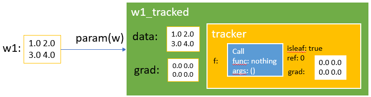

keywords: Flux.jl,Julia CJKmainfont: KaiTi –-
详解Flux.jl
本文将详细介绍Julia语言中的一个深度学习库——Flux.jl，目的是在理解其内部结构之后，能在其之上做个性化定制。
核心概念
TrackedArray
TrackedArray类型用来对最基本的数组做封装。我们知道，深度学习框架带来的最大好处之一就是不用手写梯度反传的函数，其实现是基于这样一个事实，对于一类基本的函数，其梯度的计算方式是已知的，于是通过链式法则可以实现对整个网络中的每个参数进行更新。因此，一个TrackedArray类型应该至少包含
- 数据，即数组当前的值
- 映射函数，描述当前数据是根据怎样的函数（以及对应的参数）得到的，从而方便进一步反传
- 梯度，当前数据的梯度
然后我们看看源码中的定义
struct TrackedArray{T,N,A<:AbstractArray{T,N}} <: AbstractArray{T,N}
tracker::Tracked{A}
data::A
grad::A
TrackedArray{T,N,A}(t::Tracked{A}, data::A) where {T,N,A} = new(t, data)
TrackedArray{T,N,A}(t::Tracked{A}, data::A, grad::A) where {T,N,A} = new(t, data, grad)
end可以看到，代码的定义与我们的直觉相符，这里的tracker字段就是用来记录data字段是怎么得到的。再具体看下Tracked{T}的定义：
mutable struct Tracked{T}
ref::UInt32
f::Call
isleaf::Bool
grad::T
Tracked{T}(f::Call) where T = new(0, f, false)
Tracked{T}(f::Call, grad::T) where T = new(0, f, false, grad)
Tracked{T}(f::Call{Nothing}, grad::T) where T = new(0, f, true, grad)
endref先不管，isleaf用来标志当前是否是叶子节点(叶子节点有特殊含义，需要作区分，原因是一旦遇到叶子节点，就不需要继续反传了)，grad用来记录梯度（初看似乎跟TrackedArray中有重复？其实从数据结构上来看，需要有这么个地方做缓存，后面会解释。），最关键的f记录了作用的函数以及其参数，下面是Call的定义：
struct Call{F,As<:Tuple}
func::F
args::As
end其实就是为了弥补Julia中函数的类型没有携带参数类型。
总结一下:
TrackedArray包含data,grad和tracker三个字段，分别用于记录当前节点上的数据，梯度以及当前节点是如何根据其它节点计算得到的。tracker是一个Tracked{T}类型，其中最核心的一个字段是计算函数f::Call。
前向计算
现在我们了解了TrackedArray的组成，但是具体怎么做前向计算的呢？
通过param构造TrackedArray
万丈高楼平地起！
在julia中，数组一般以AbstractArray的形式存在，而在Flux中，为了存储前向计算函数和梯度信息，需要将这类AbstractArray数据构造成TrackedArray，然后才能对不同的TrackedArray做前向计算。param函数就是用来构造TrackedArray的。
# https://github.com/FluxML/Flux.jl/blob/master/src/tracker/Tracker.jl#L107
param(xs::AbstractArray) = TrackedArray(float.(xs))
# https://github.com/FluxML/Flux.jl/blob/master/src/tracker/lib/array.jl#L32
TrackedArray(x::AbstractArray) = TrackedArray(Call(), x, zeros(x))
# https://github.com/FluxML/Flux.jl/blob/master/src/tracker/Tracker.jl#L25
Call() = Call(nothing, ())
# https://github.com/FluxML/Flux.jl/blob/master/src/tracker/lib/array.jl#L29
TrackedArray(c::Call, x::A, Δ::A) where A <: AbstractArray = TrackedArray{eltype(A),ndims(A),A}(Tracked{A}(c, Δ), x, Δ)
# https://github.com/FluxML/Flux.jl/blob/master/src/tracker/Tracker.jl#L39
Tracked{T}(f::Call{Nothing}, grad::T) where T = new(0, f, true, grad)可以看到，对于原始的数组类型，用param封装成TrackedArray之后，主要就是在外层套了一个nothing的f，并置为了叶子节点。

这里用一个例子来确认下：
julia> w1 = [1 2; 3 4]
2×2 Array{Int64,2}:
1 2
3 4
julia> w1_tracked = param(w1)
Tracked 2×2 Array{Float64,2}:
1.0 2.0
3.0 4.0
julia> w1_tracked.data
2×2 Array{Float64,2}:
1.0 2.0
3.0 4.0
julia> w1_tracked.grad
2×2 Array{Float64,2}:
0.0 0.0
0.0 0.0
julia> w1_tracked.tracker.f
Flux.Tracker.Call{Void,Tuple{}}(nothing, ())
julia> w1_tracked.tracker.isleaf
true理解TrackedArray这个基础概念之后，接下来看看如何对TrackedArray做运算，毕竟在Flux的世界里，深度学习的网络就是靠TrackedArray构造的(其实还有TrackedReal等等)。在Flux的array.jl文件中，做了大量对TrackedArray的封装工作，目的主要有：
- 将
TrackedArray看作普通的AbstractArray，把系统对Array的一些操作绑定到data字段上 - 重载一些基本的数组运算，通过
track函数将对TrackedArray的运算结果封装成新的TrackedArray
粗略看一下array.jl便可发现，几乎所有的运算都靠track函数来实现转换：
function track(f, xs...; kw...)
# 前向计算，得到结果y和反向求导函数back
y, back = _forward(f, xs...; kw...)
# 生成新的Tracked结构
track(Call(back, tracker.(xs)), y)
end第一次看这个代码的时候一脸懵，因为全局搜索_forward你会发现，源代码中总共只出现了三处。但这不符合直觉啊，所有的TrackArray运算都会用到_forward函数，因此应该有很多重载函数才对。后来才发现，_forward函数是通过一个@grad宏定义的（这个宏稍稍有点复杂，核心是定义前向和反向求导的计算方式），在重载（或者定义）每个计算函数的时候，通过这个@grad宏同时把前向计算和梯度计算函数都定义了。
macro grad(ex)
@capture(shortdef(ex), (name_(args__) = body_) |
(name_(args__) where {T__} = body_)) || error("Need a function definition")
T == nothing && (T = [])
isexpr(name, :(::)) || (name = :(::typeof($name)))
insert!(args, 1+isexpr(args[1], :parameters) , name)
@q(Tracker._forward($(args...)) where $(T...) = $body) |> esc
end这里很骚气地用了MacroTools中的@capture宏，说白了，就是用来构造上面的_forward函数，看个例子就明白了
@grad a * b = data(a)*data(b), Δ -> (Δ*b, a*Δ) # 返回两个元素，第一个是前向计算的结果，第二个是反向计算梯度的函数于是，前向计算的问题基本解决了，同时反向计算需要的偏导函数也准备好了。为了支持除了built-in计算方式之外的一些常见的函数（比如Softmax, Relu等），Flux单独开发了一个库NNlib.jl。
反向传播
从代码逻辑上来讲，反向传播的实现很容易：
- 从后往前计算偏导并更新
TrackedArray的grad字段 - 根据偏导更新weight
不过有些小细节需要处理：
function back!(x, Δ)
istracked(x) || return
scan(x)
back(tracker(x), Δ)
return
end这里，scan的目的是重置整个网络中的grad：
function scan(x::Tracked)
x.isleaf && return
ref = x.ref += 1
if ref == 1
scan(x.f)
isdefined(x, :grad) && (x.grad = zero_grad!(x.grad))
end
return
end可以看到，ref的作用是引用计数（这里先+=1，后面back执行的时候会-=1），反向传播的时候，会将多次计数的grad进行累加，直至计算完成后再真正执行back_:
function back(x::Tracked, Δ)
x.isleaf && (x.grad = accum!(x.grad, Δ); return)
ref = x.ref -= 1
if ref > 0 || isdefined(x, :grad)
if isdefined(x, :grad)
x.grad = accum!(x.grad, Δ)
else
x.grad = Δ
end
ref == 0 && back_(x.f, x.grad)
else
ref == 0 && back_(x.f, Δ)
end
return
end而back_的逻辑就很简单了：
function back_(c::Call, Δ)
Δs = c.func(Δ)
(Δs isa Tuple && length(Δs) >= length(c.args)) ||
error("Gradient is not a tuple of length $(length(c.args))")
foreach(back, c.args, data.(Δs))
end计算偏导并迭代下去。
接下来是update!
function update!(x, Δ)
x.data .+= data(Δ)
tracker(x).grad .= 0
return x
end可以看到，每次计算完会有一个置零的操作。
对，如果手动更新的话，就这么简单了。
不过大多时候，都有个Optimiser，如SGD,Adam等，来辅助更新梯度。Flux在这方面没有任何特殊之处，作者用一个Param结构来管理data和Δ。
struct Param{T}
x::T
Δ::T
en然后，各个Optimizer管理自己的状态，~~主要是通过闭包实现的~~，最新版的不再使用闭包了，直接构造了struct。
layer
layer对一些常见的模块做了封装，如RNN和CNN等。写起来确实简单，不过，感觉需要有benchmark测试下性能。
其它
剩下的主要就是一些工具函数了，比如treelike，onehot等。